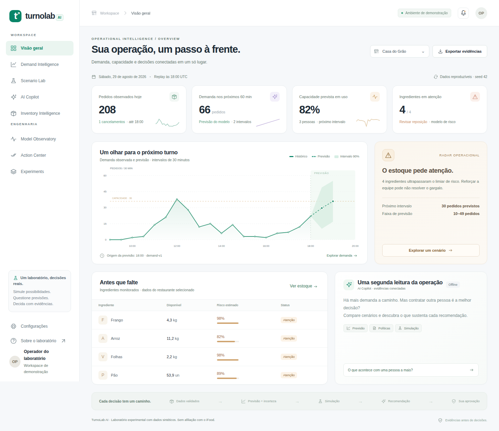
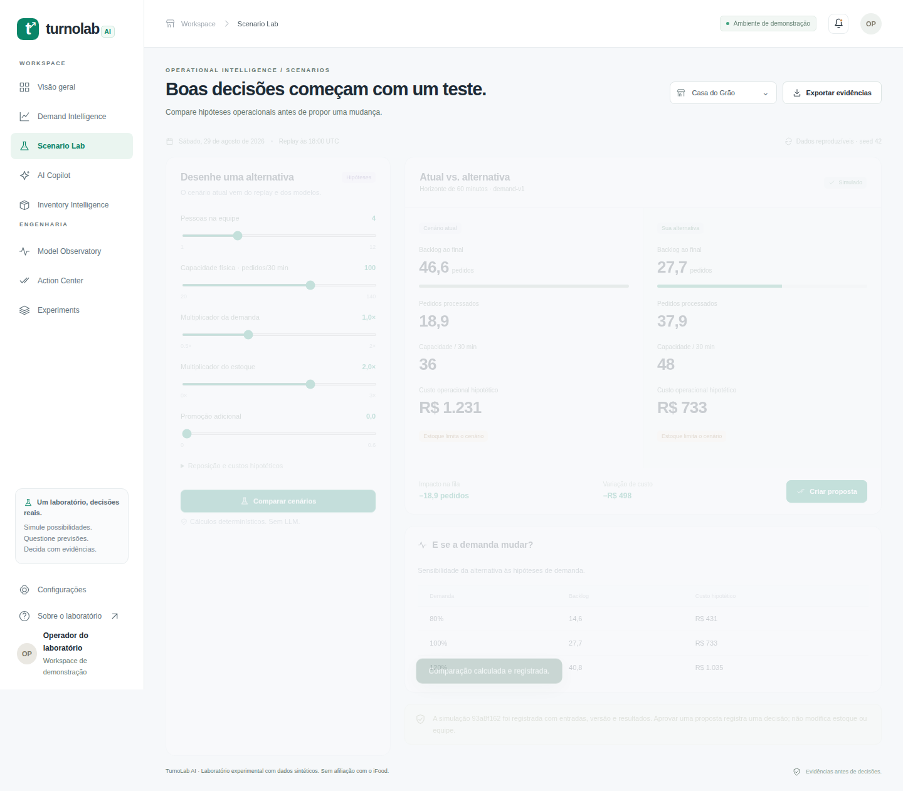
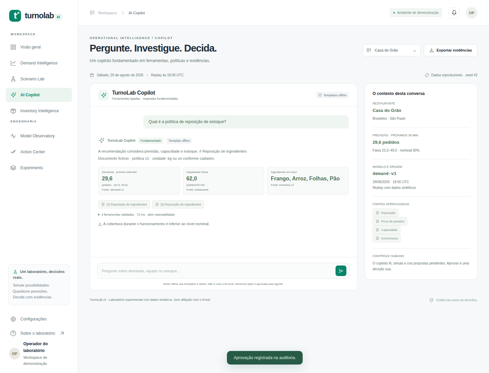

ML · Simulação · Decisão assistida
Previsões não decidem. Pessoas decidem.
Explore um experimento reproduzível de previsão de demanda, capacidade e custos operacionais hipotéticos. O objetivo é tornar recomendações examináveis, não automatizar decisões às cegas.
Explorar resultadosVer demo real ↗

Prévia estática, não sistema em produção: os controles abaixo apresentam resultados experimentais já medidos. Não treinam modelos, não chamam LLMs nem executam simulação em tempo real. Todos os dados e custos são sintéticos.
400Cenários sintéticos
0 / 2.000Violações do limite de equipe na versão revisada
90,68%Cobertura no teste sintético aberto, horizonte +30 min
Experimento de ablação
O que realmente mudou a decisão?
Escolha uma estratégia para consultar custo e backlog médios publicados em 400 cenários.
Custo médio hipotético
R$ 367,37
Backlog médio em pedidos
13,98
Custo relativo à referência: 100%
Backlog relativo à referência: 100%
Regras fixas
Referência sem modelo preditivo para selecionar ações.
A redução numérica veio da previsão e do simulador. Os componentes RAG e copiloto offline acrescentam contexto, mas não alteram os cálculos deste experimento.
Consultar os dados por cenário ↗Protocolo: metodologia · correções.
Código aberto
Experimentos e aplicação completa
Além dos relatórios, o repositório contém a API FastAPI, modelos de previsão, simulação, recuperação de documentos, aprovação humana e testes automatizados.

